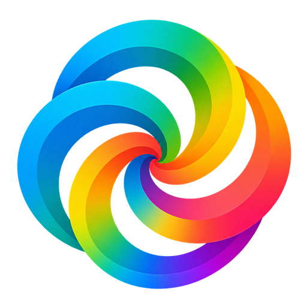

企画説明
EMC共創フォーラム
テーマ アントレプレナーシップを醸成する教育者
本日お伝えしたいこと
アントレプレナーシップ教育者の在り方について議論し、
一人ひとりがどう在り、何をしていくのかを
定める場を開きたい。
- なぜやるのか目指す先と、学生として学ぶ中で見えた問い
- 何をするのかフォーラムの概要と当日の流れ
- 目指す状態当日のゴールと、その後のゴール
- 今後の進め方チームメンバーとともに具体化
私たちが目指す先
MISSION
変化が激しく先の読めない時代に、
アントレプレナーシップを発揮できる人材、つまり
新たな価値を創造する人材を生み出すこと。
こうした時代は「BANI（バニ）」とも呼ばれます
- Brittleもろい
- Anxious不安な
- Nonlinear予測しにくい
- Incomprehensible理解しがたい
学生として学ぶ中で気づいたこと
教える人自身が挑戦している姿から、
学生のアントレプレナーシップは育つ。
- 教える人が
自ら挑戦している - 学生がその姿を
間近で見る - 学生も一歩
踏み出したくなる
具体的なエピソード（EMCで学ぶ中で、教える人の挑戦する姿に触れ、自分の中で何が変わったか）
だからこそ生まれた問い
アントレプレナーシップ教育を行う人自身にも、
アントレプレナーシップが必要なのではないか。
これは誰かへの指摘ではなく、私たちが学生として学ぶ中で見えてきた問いです。
先生方とともに、この問いを考える場をつくりたいと考えています。
この問いには正解がない
だからこそ、在り方について議論し、
それぞれが自分なりの答えを持つことが
必要だと考えています。
- 前提教育に
正解・不正解はない - 場で在り方について
議論する - 一人ひとりが自分なりの
答えを持つ - その後その答えへ
進んでいく
フォーラムの概要
アントレプレナーシップ教育者の在り方について議論し、
一人ひとりがどう在るか、何をしていくのかを定める場
- テーマ
- アントレプレナーシップを醸成する教育者
- 対象
- アントレプレナーシップ教育、探究学習、学校教育の改善などに関心を持つ教育関係者
- 形式
- 一方的な知識提供ではなく、教育者同士が経験や問いを持ち寄って対話する場
- 日時・会場・規模
- 未定（今後検討）
当日の流れ
プログラムはこれからチームで具体化します。
大切にしたい方針は、次の3つです。
- 持ち寄る教育者同士が、自身の経験や問いを持ち寄る
- 対話する一方的な知識提供ではなく、対話を中心にする
- 持ち帰る当日の満足度だけでなく、その後の関係や実践につなげる
当日のプログラム（今後検討）
目指す状態
当日のゴール
-
1
参加者一人ひとりが、どう在り、何をし、何をし続けるのかを定めている。
-
2
未来の教育にワクワクし、自身のアントレプレナーシップが発揮されている状態で帰る。
※ 当日・その後のゴールは「目指すゴール」であり、今後チームメンバーとともに具体化していきます。
目指す状態
その後のゴール
-
当日
どう在り、何をし、何をし続けるのかを定める。
-
その後
定めたことを実践し続けられる仲間とつながっている。
※ 当日で終わらせず、定めたことを実践し続けられる関係までを、フォーラムの価値と考えています。
今後の進め方
当日とその後のゴールを目指し、
チームメンバーとともに具体的な内容を詰めていきます。
これから詰めること
- ゴールの具体化
- 日時・会場・規模
- 当日のプログラム